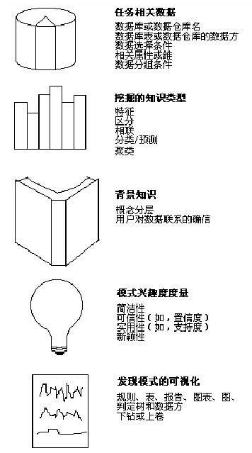

数据挖掘即是一个需要人工干预和指导，又是一个高度流程化的一个过程。这就使得在数据挖掘系统设计中需要考虑用用于交互的模块，也要将流程化的模块固定下来。
数据挖掘挖掘原语主要解决的就是上述问题。原语不仅定义了数据挖掘的要素和主要流程，还定义了每个流程和要素模块，用户是如何介入的。
数据挖掘原语组成：任务相关的数据，要挖掘的知识类型，指导挖掘过程的背景知识，模式评估兴趣度量和显示所发现的知识。
-
任务相关的数据：定义数据输入的来源，格式。常常由用户选定数据集。
-
要挖掘的知识类型：描述和区分，分类和预测，聚类，异常点检测，时序模型等等。通常知识类型描述的是需要的输出结果，例如一个统计数据的方法、分类器，异常检测器等等。可以利用这些算法（机）输出知识信息。
-
指导的背景知识：已有的一些知识。例如挖掘对象的语义模型，概念分层模型。属性间的关联规则等等。
-
兴趣度量：对挖掘结果的评估和筛选。所有数据挖掘结果并不一定是有用的，合理的。
-
知识可视化：图表，多维度展示，规则库等等方式。
相关产品：
SQLSERVER Analysis服务系列：可以从数据仓库中选择一个数据立方或者多个数据集，然后选择指定的算法进行挖掘。挖掘结果可以用决策树，图表等多种展现方式。
Weka平台：支持数据的导入、清洗，数据挖掘方法的选择，结果可视化等。
研究点：数据挖掘查询语言DMQL
目前对用户指导的背景知识设计这块还比较欠缺。大多数产品都是选择模式进行数据的处理。而没有采取融合多个算法模式进行挖掘。
背景知识利用的不充分。用户可以自定义的背景知识较为有限。
